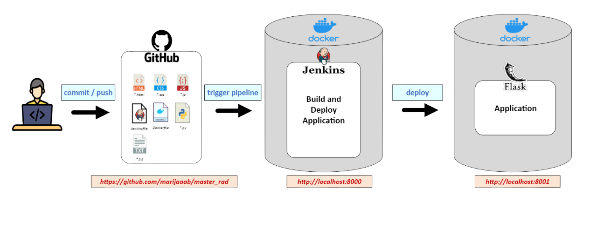
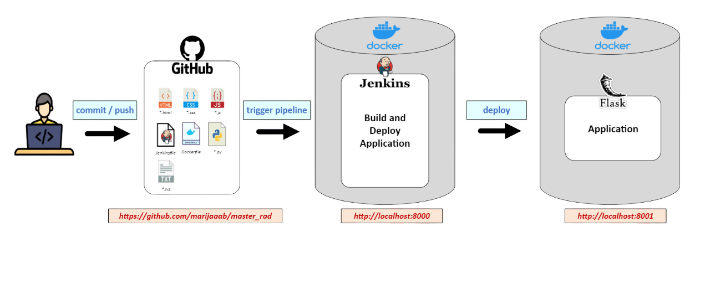

About this application 👩💻
Here is the picture of workflow used to build and deploy this application. Feel free to click on any part of the workflow you are interested in, to find out more.
Here is the picture of workflow used to build and deploy this application. Feel free to click on any part of the workflow you are interested in, to find out more.
